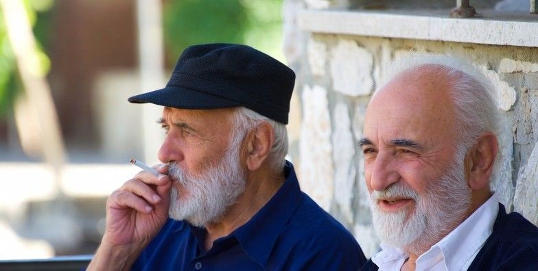

Veel voorkomend
Roken is op Kos, en in heel Griekenland, nog altijd een veelvoorkomend verschijnsel. In vergelijking met veel andere Europese landen wordt er relatief veel gerookt. Het is niet ongewoon om mensen te zien roken op terrassen, stranden of tijdens het uitgaan. Voor niet-rokers kan dit even wennen zijn.